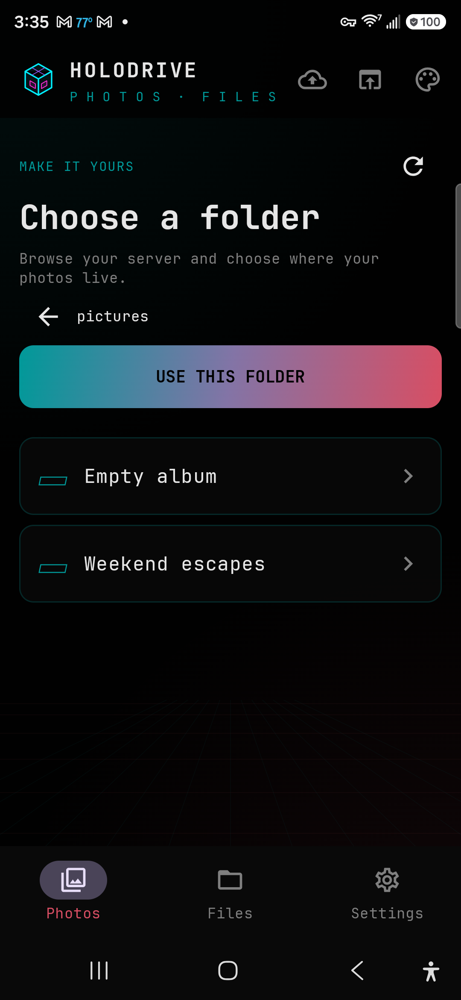
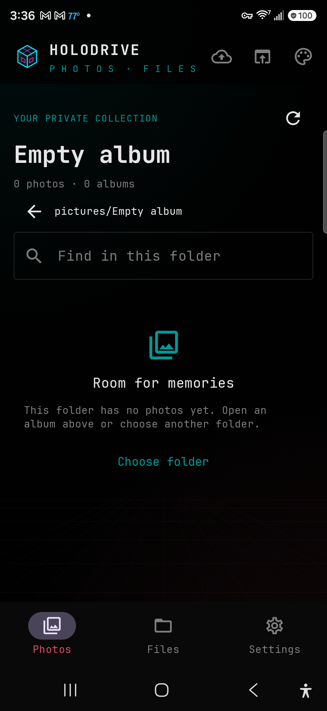

Browse the gallery.
Choose a photo library folder on your server. Browse image albums by folder and open a full-screen viewer with swipe navigation and pinch zoom.
ANDROID 11+ / SELF-HOSTED
Holodrive Photos connects your Android phone to the Holodrive server you control. Browse photos and files, save originals, and send files from other apps into your library.
● APACHE-2.0 SOURCE — SIGNED RELEASES — NO TRACKING

01 / MADE FOR YOUR SERVER
Connect once, then move naturally between your photo library and the files stored across your configured Holodrive drives.
Choose a photo library folder on your server. Browse image albums by folder and open a full-screen viewer with swipe navigation and pinch zoom.
Use the separate Files view to browse configured drives and folders, search names in the current folder, and download files.
Send files from other Android apps to Holodrive. Uploads queue in the background, resume interrupted chunks, and retry when the network returns.
Connect over HTTPS or your Tailscale network. The app uses device tokens for background uploads and includes no ads, analytics, or telemetry.
02 / REAL APP SCREENSHOTS
Captured from the running app on an Android phone. Sample travel photos are generated for the demo; no personal library content is shown.



03 / DOWNLOAD + INSTALL
Releases are signed with the project’s update key. Verify the published SHA-256 before installing, then use Obtainium for update notifications.
SIGNED GITHUB RELEASE / ANDROID 11+
Version 0.1.0 is available now. Download the signed APK and install it on your Android phone; Android may ask you to allow installs from your browser or file manager.
DOWNLOAD APK ↗curl -fL -o holodrive-photos.apk https://github.com/cybercore-tech/holodrive-android-app/releases/latest/download/holodrive-photos.apkcurl -fL -o holodrive-photos.apk.sha256 https://github.com/cybercore-tech/holodrive-android-app/releases/latest/download/holodrive-photos.apk.sha256 && sha256sum --check holodrive-photos.apk.sha256On your phone, open the downloaded APK and follow Android’s install prompt. Add the repository to Obtainium for update notifications.Download the APK on your phone, open it, review Android’s install prompt, and install. You can also transfer the APK from a computer.
Enter your Holodrive server address. Connect Tailscale first for a tailnet server, then sign in or use a device token.
Install Obtainium, choose Add app, and paste https://github.com/cybercore-tech/holodrive-android-app. Android asks before applying each update.
PRIVACY POLICY ↗APACHE-2.0 LICENSE ↗SOURCE + ISSUES ↗HOLODRIVE WEB APP ↗